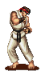
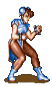
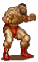

<!DOCTYPE html>
<html lang="en"></html>

<head>   
    <title>STREET FIGHTER 2 ENCYCLOPEDIA</title>
    <link rel="stylesheet" href="SF2Deco.css">
    <meta charset="UTF-8">
    <meta name="description" content="Street Fighter Moveset">
    <script src="hadouken.js"></script>
</head>

<body style="background-color: rgb(14, 36, 109); text-align: center;">

<h1>Move Animations!</h1>
<p>Wonder how each move looks before trying them out in-game? Press the button to see the fighters use their signature moves!</p>
  <a id="animation" href="SFEncyclopedia.html">Press here to go back to the encylopedia!</a>

<h2>Ryu</h2>
<p>Ryu does a jumping uppercut, an effective response to jumping opponents.</p>
<button class="moveit" onclick="
  startAnimation1()
  ">SHOURYUUKEN!!!!</button>
<br>
<br>

 
 </img> 

<br>
<br>

<h2>Ken</h2>
<p>Ken jumps and rotates while kicking, a versatile move that hits multiple times.</p>
<button class="moveit" onclick="
  startAnimation2()
  ">TATSUMAKI!!!!</button>
<br>
<br>  

 
 </img> 

<br>
<br>

<h2>Chun-Li</h2>
<p>Chun-li flies through the screen by spinning her legs midair, kicking foes. A bit hard to execute but can deal high damage if it hits the opponent.</p>
<button class="moveit" onclick="
  startAnimation3()
  ">SPINNING BIRD KICK!!!!</button>
<br>
<br>


 
 </img> 
<br>
<br>


<h2>Zangief</h2>
<p>Zangief rotates his arms, hitting opponents. Great for dealing with jumping opponents.</p>

<button class="moveit" onclick="
  startAnimation4()
  ">DOUBLE LARIAT!!!!</button>
<br>
<br>

 
 </img> 
<br>
<br>


</section>

<script>

let currentFrame = 0;
let speed = 200;
var intervalId1 = null;
var intervalId2 = null;
var intervalId3 = null;
var intervalId4 = null ;     
const imgElement1 = document.getElementById('RyuMini');
const imgElement2 = document.getElementById('KenMini');
const imgElement3 = document.getElementById('ChunMini');
const imgElement4 = document.getElementById('ZangiefMini');


function changeImage1() {
            // Update image source, put image on site
            imgElement1.src = frames1[currentFrame];
      
            // Move to next frame, loop back to 0 when reaching the end using %
            currentFrame = (currentFrame + 1) % frames1.length;
        }

function changeImage2() {
            imgElement2.src = frames2[currentFrame];
      
            currentFrame = (currentFrame + 1) % frames2.length;
        }

function changeImage3() {
            imgElement3.src = frames3[currentFrame];
      
            currentFrame = (currentFrame + 1) % frames3.length;
        }

function changeImage4() {
            imgElement4.src = frames4[currentFrame];
      
            currentFrame = (currentFrame + 1) % frames4.length;
        }
      

function startAnimation1() {
            intervalId1 = setInterval(changeImage1, speed);
            setTimeout(function() {
              clearInterval(intervalId1);
            },1800)
        }

function startAnimation2() {            
            intervalId2 = setInterval(changeImage2, speed);
            
            setTimeout(function() {
              clearInterval(intervalId2);
            },2000)
        }

function startAnimation3() {
            intervalId3 = setInterval(changeImage3, speed);
            
            setTimeout(function() {
              clearInterval(intervalId3);
            },4400)
        }

function startAnimation4() {
            intervalId4 = setInterval(changeImage4, speed);
            
            setTimeout(function() {
              clearInterval(intervalId4);
            },2000)
        }

</script>


<footer>
    Shoutout to Spriter's Resources and Strategy Wiki!
</footer>
<br>


</body>

